Origin and Evolution of S-Star Cluster
Aleksey Generozov
Collaborators: Hagai Perets, Stefan Gillessen, Frank Eisenhauer, Reinhard Genzel

S-Star Orbits
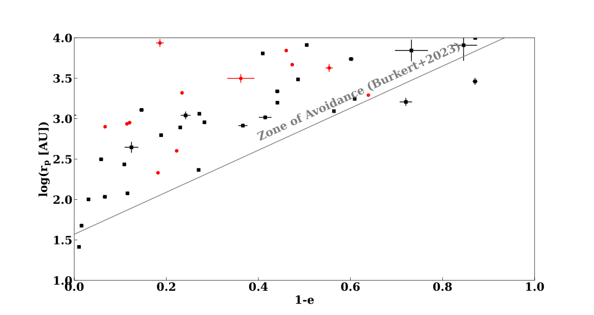S-Star Orbits
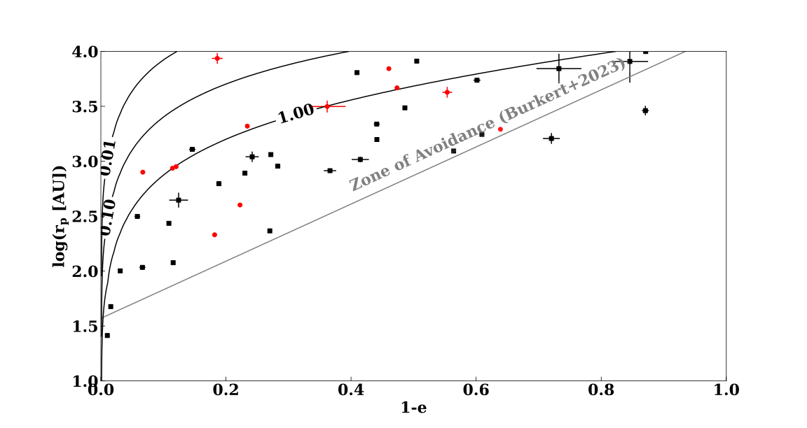S-Star Orbits
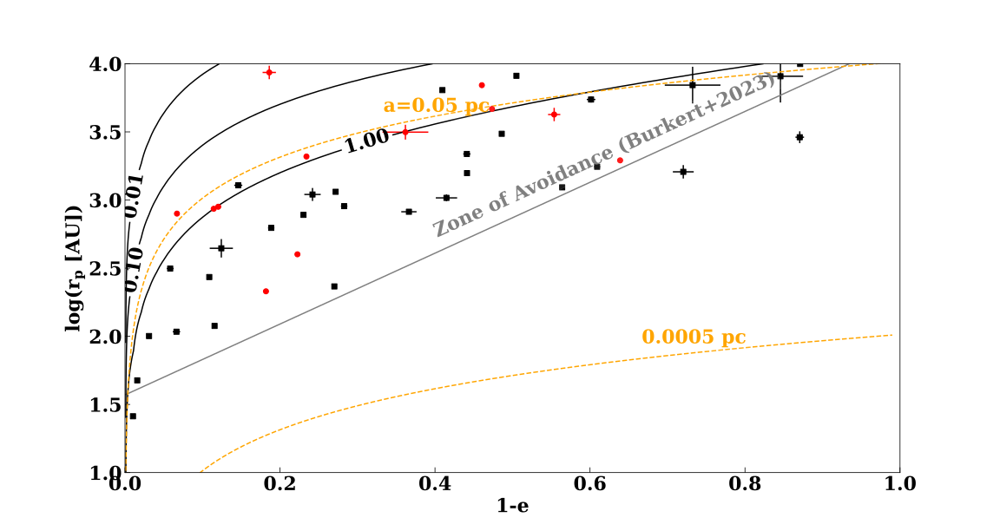S-Star Orbits
S-Star Orbits
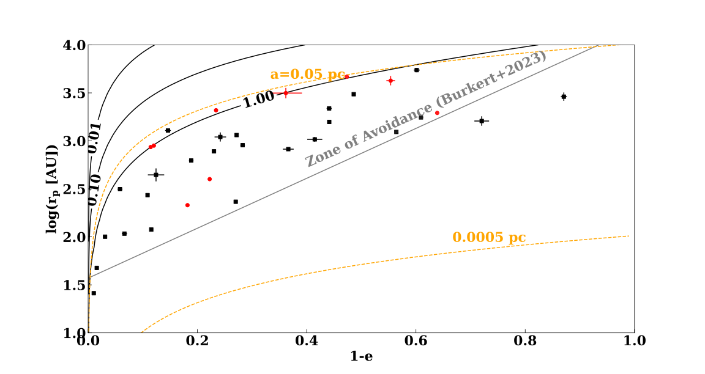Binary disruptions
Perets+2007 : Binaries scattered from >1 pc distancesMadigan+2009 : Binaries from
young disc
Binary disruptions 101
Binary disruptions 101
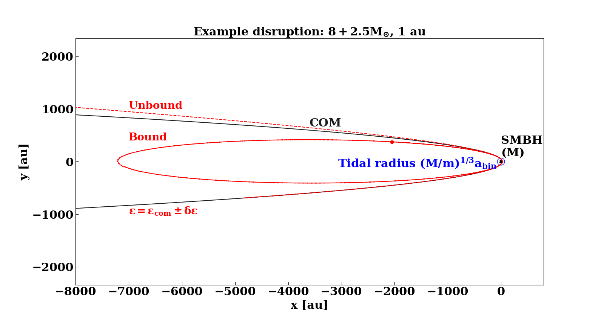Binary disruptions 101
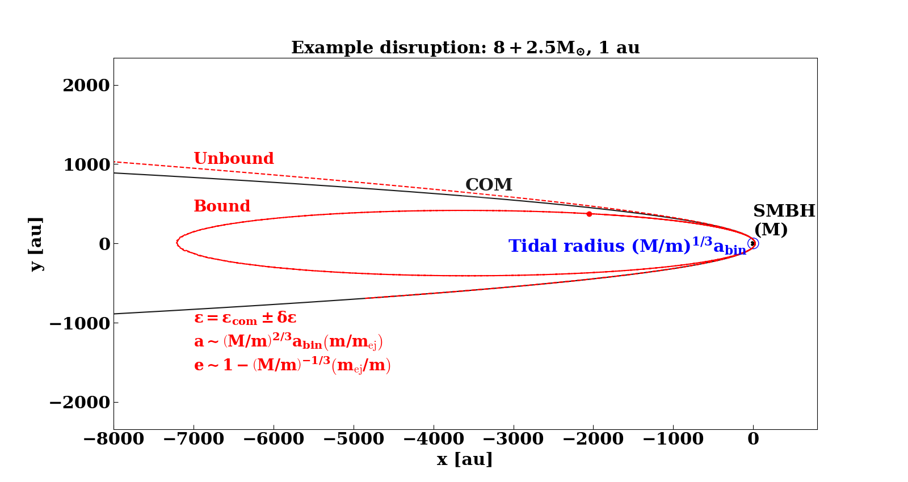Zone of Avoidance
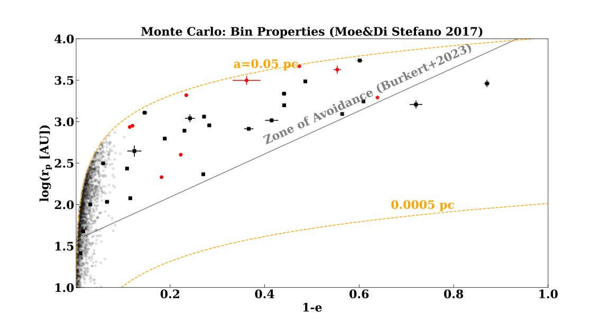Zone of Avoidance
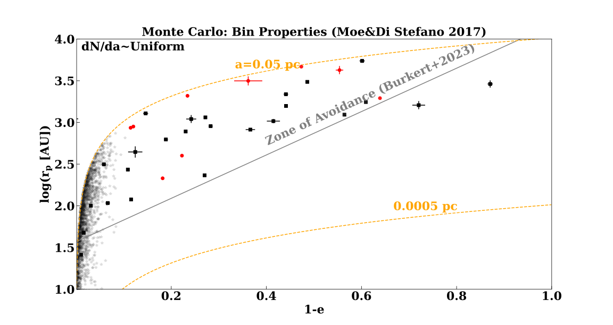Zone of Avoidance
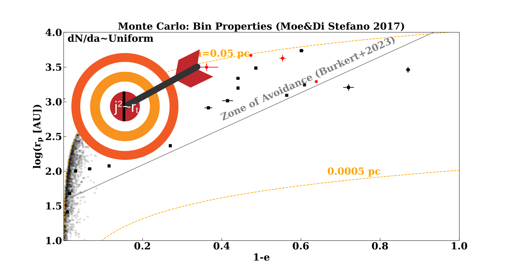Relaxation


Background
- $m_{\rm bh}(r)=2.4\times 10^3 \left(r / 0.01 {\rm pc}\right) M_{\odot}$. 10 $M_{\odot}$ each
(Antonini&Merritt 2013) - $m_{\rm *}(r)=300 \left(r / 0.01 {\rm pc}\right)^{1.8} M_{\odot}$
(Schodel+2018) - 2500 $M_{\odot}$ inside S2 $\sim$ upper limit from GRAVITY...
- Diffusion Coefficient from JuDOKA
(Tep+2021)
Relaxation
Relaxation
Detailed Comparisons
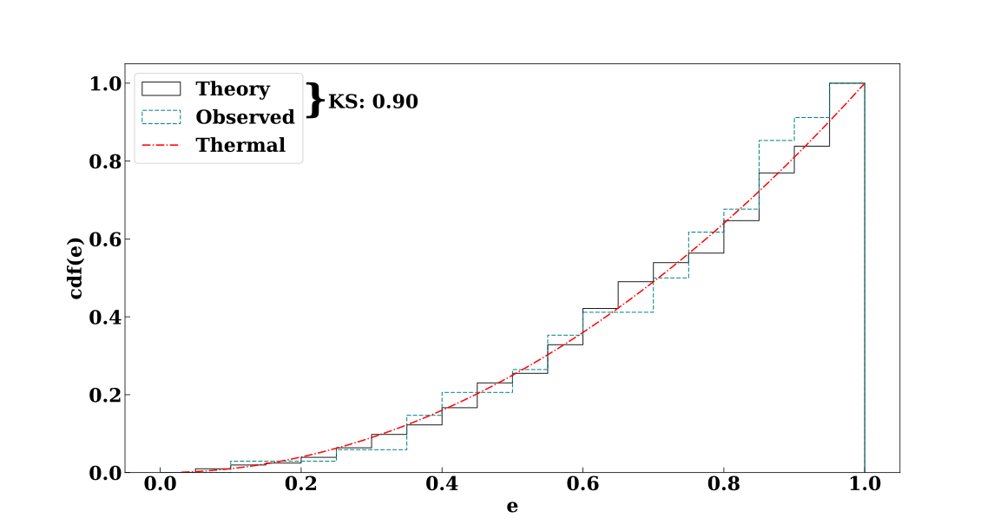
Detailed Comparisons
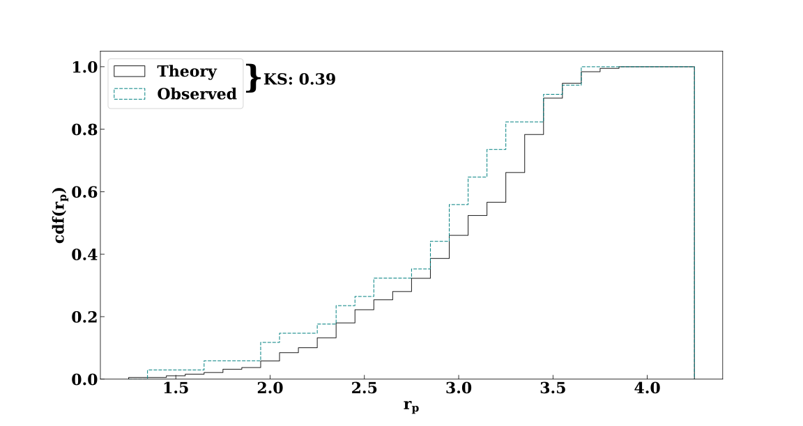
Detailed Comparisons (All Stars)
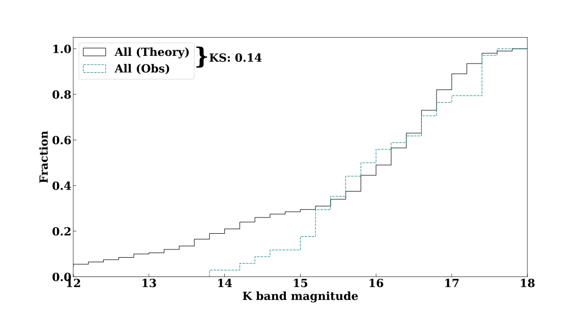
Conclusions
- External binary disruptions + relaxation can account for the S-star orbital distribution
- Disk is possible but may require more massive black holes
Diffusion coefficients
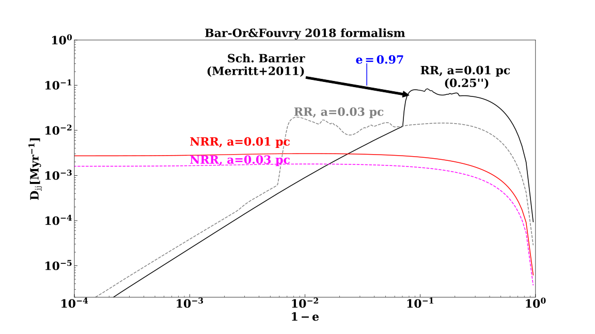Detailed Comparisons
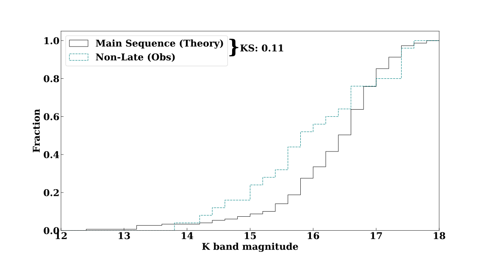